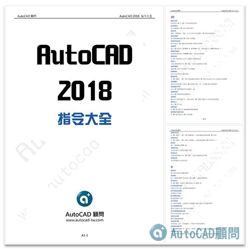

<p>目前AutoCAD中大約有7.8百個指令，你知道的指令有哪些呢？</p>
<p>以下整理成PDF檔案有需要的朋友 可以直接下載！</p>
<div class="dl-btns"><div class="section-title">⬇️ 免費下載</div><a class="dl-btn" href="https://drive.google.com/file/d/1lxluA33QcUysjCVa5wEfA74-qQ23J8-g/view?usp=sharing" target="_blank" rel="noopener">⬇️ 下載 AutoCAD 2018 指令大全.pdf<small>Google 雲端</small></a><a class="dl-btn alt" href="https://app.box.com/s/tb5lb83iskz5sdmz9sw922fd6delhfq1" target="_blank" rel="noopener">⬇️ 備用下載<small>Box</small></a></div>
